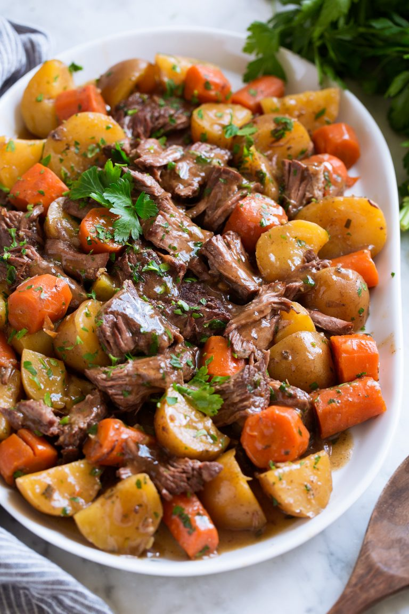

Pot Roast

Ingredients
- Olive Oil (1 1/2 tablespoons)
- Chuck Roast (3 lb)
- Thickly Sliced Yellow Onion (1)
- Minced Garlic (5 Cloves)
- Beef Broth (1 1/4 Cups)
- Worcestershire Sauce (2 Teaspoons)
- Thyme (1 Tablespoon)
- Rosemary (1 Tablespoon)
- Parsley (2 Tablespoons)
- Yukon Gold Potatoes (2 1/2 lbs)
- Carrots (5)
Optional
- Xantham Gum (1 Tablespoon)
OR
- Corn Starch (2 1/2 Tablespoons)
Instructions
- Heat olive oil in a large pot over med-high heat.
- Sear roast in pot until brown on both sides. Usually 4-5 minutes per side.
- Place roast in slow cooker.
- Saute onions in the same pan as you browned the meat in for 2 minutes.
- Pour onions and juices over the roast,
- Add your garlic, Worcestershire sauce, thyme, and rosemary.
- Layer potatoes and carrot in your slow cooker and cover with beef broth.
- Slow cooking time. Be elsewhere for 8-9 hours.
- Remove finished roast and shred.
- Add parsley as garnish.
Optional
- To make a gravy, pour broth from cooked meat into a small saucepan.
- Heat on med-high and add your xantham gum or corn starch.
- Simmer and stir until at desired thickness, usually 1 minute.
Return
Source: cookingclassy